Fivetran + Iceberg + Snowflake (Azure)
Connect Fivetran to Azure ADLS Gen2 as an Apache Iceberg destination, then integrate with Snowflake to query open lakehouse data using a catalog-linked database.
Adapt to Your Environment
This guide is a reference implementation demonstrated in a simplified environment. Your networking, security policies, IAM configurations, and infrastructure will differ. Always validate against your organization's requirements before implementing.
Architecture
Azure SQL Database
│
▼
Fivetran
│
▼
Azure ADLS Gen2 ◄── Iceberg Tables
│
▼
Snowflake
(Catalog-Linked Database)
Prerequisites
- Azure account with permissions to create storage accounts, app registrations, and role assignments
- Fivetran account with permissions to configure connectors and destinations
- Snowflake account (Enterprise edition or higher) with
ACCOUNTADMINrole - An Azure SQL Database with data to sync (or another supported Fivetran source)
1. Provision Cloud Storage (Azure ADLS)
Create an Azure Storage Account with ADLS Gen2 to store Iceberg tables written by Fivetran.
Environment-Specific
The storage account settings below are for demonstration. Consult your cloud/security team for your organization's required networking, encryption, and access configurations.
Create a Storage Account
1. In the Azure Portal, search for Storage accounts and select it.
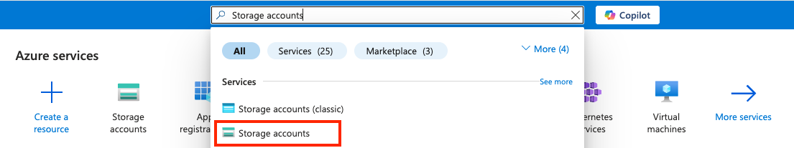
2. Click Create.
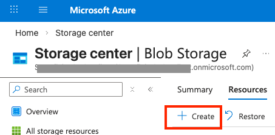
3. Fill in the Basics tab:
| Setting | Value |
|---|---|
| Subscription | Your Azure subscription |
| Resource group | Create new or select existing |
| Storage account name | Must be globally unique (e.g., timjonesiceberg) |
| Region | East US 2 (match your Snowflake region if possible) |
| Preferred storage type | Azure Blob Storage or Azure Data Lake Storage Gen 2 |
| Performance | Standard |
| Redundancy | Locally-redundant storage (LRS) — adjust to your requirements |
Click Next: Advanced.
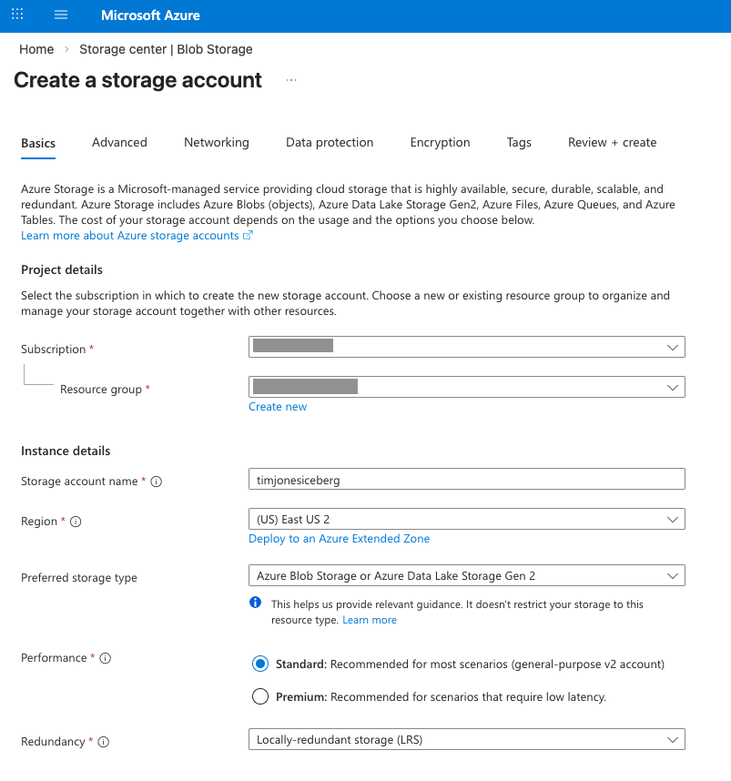
4. On the Advanced tab, leave all defaults except:
Critical Setting
Enable hierarchical namespace must be checked. This is what makes the storage account ADLS Gen2 rather than standard Blob Storage. Without this, the Iceberg integration will not work.
Tip
Review all other settings on this tab with your internal security team.
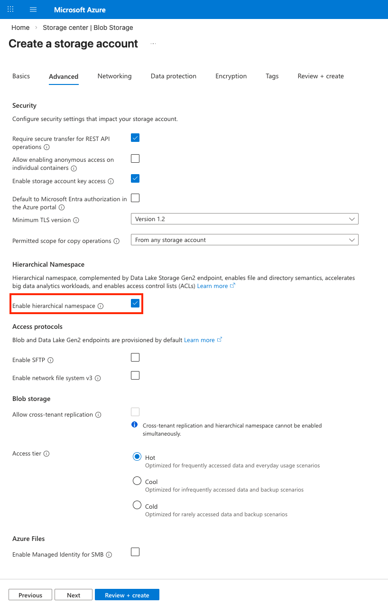
5. On the Networking tab, all defaults were left as-is for this demo.
Note
Review networking settings against your internal networking requirements. Your organization may require private endpoints, specific firewall rules, or restricted virtual network access.
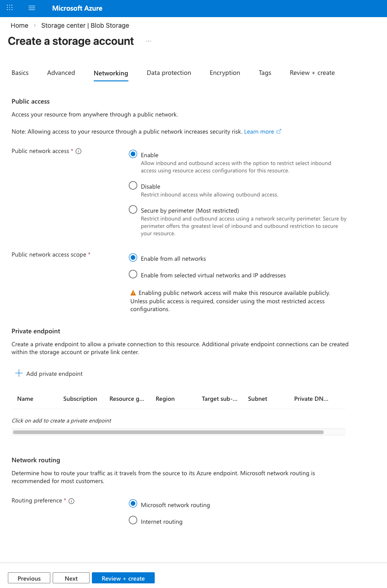
6. On the Data protection tab, uncheck Enable soft delete for file shares.
This setting applies to Azure Files, which we are not using in this setup.
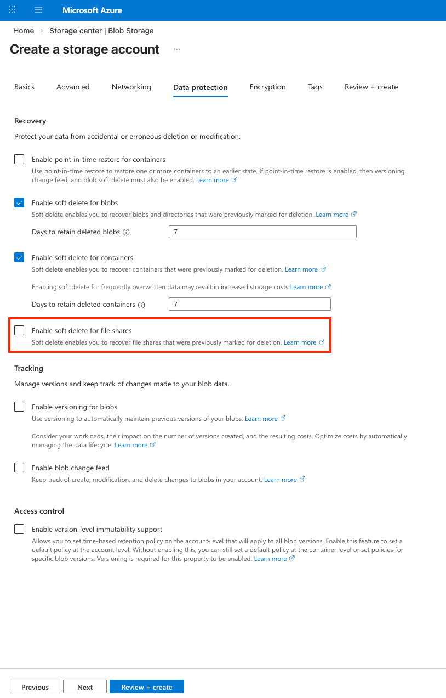
7. On the Encryption tab, all defaults were left as-is.
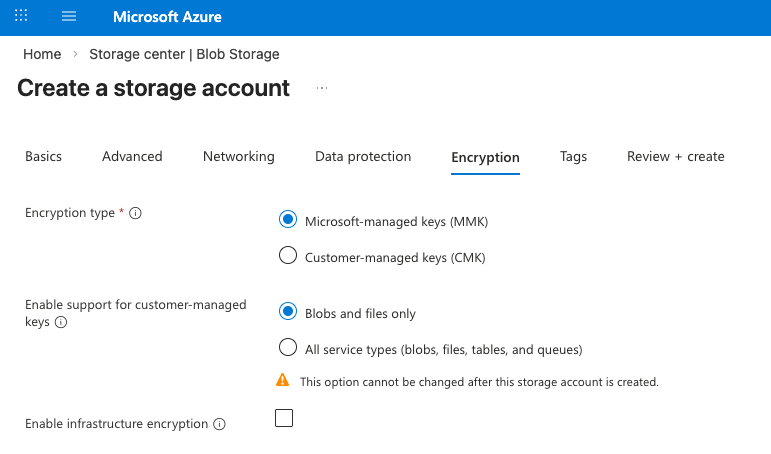
8. On the Tags tab, no tags were added for this demo.
Tip
In production, add tags that align with your organization's requirements (e.g., Environment, Owner, CostCenter).
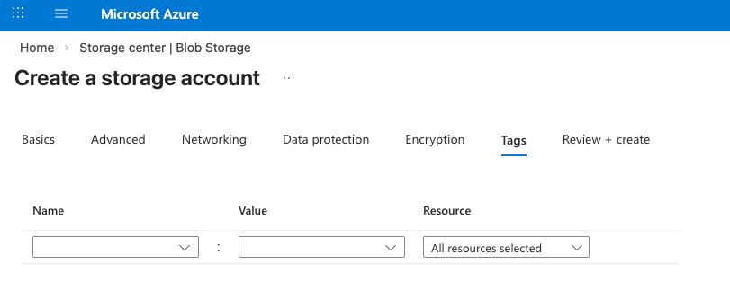
9. Navigate to Review + create, review all selections, and click Create.
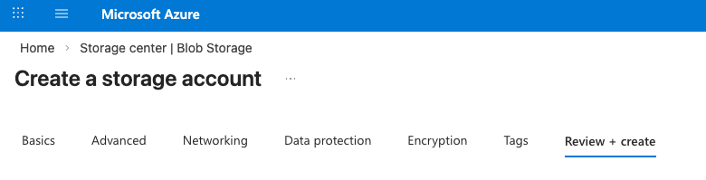
10. Once deployment completes, click Go to resource.
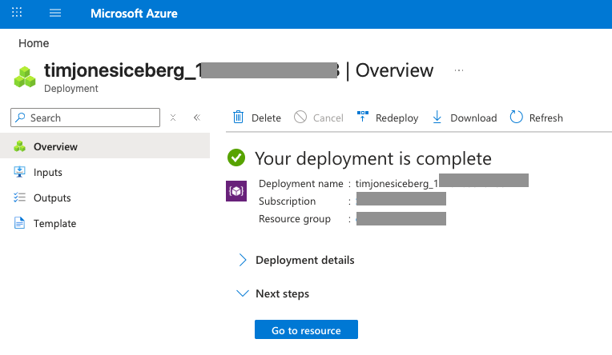
Create a Container
11. In the left-hand pane, navigate to Data storage and select Containers.
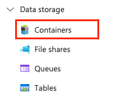
12. Click + Add container.
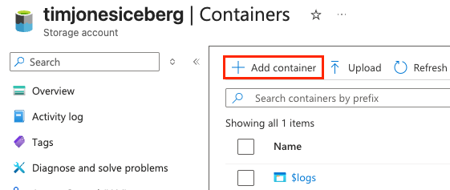
13. Give the container a name (e.g., landing) and keep all defaults. Click Create.
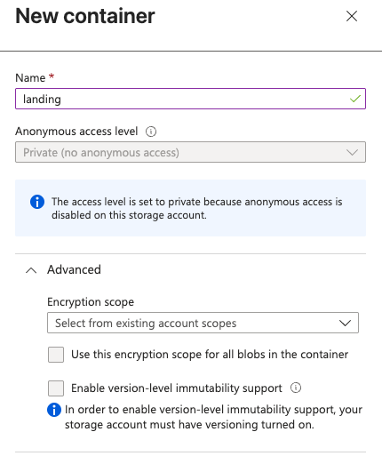
Storage Setup Complete
Your Azure Storage Account and ADLS Gen2 container are now provisioned and ready for Fivetran to write Iceberg data.
2. Enable Fivetran Access to ADLS
Create an Azure service principal so Fivetran can write Iceberg data to your ADLS container.
Register an App (Service Principal)
14. In the Azure Portal, search for App registrations and select it.
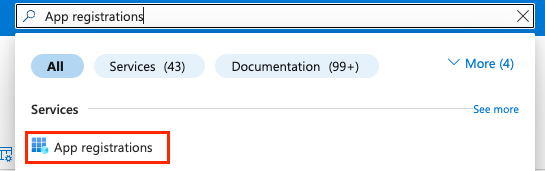
15. Click + New registration.
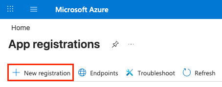
16. Give the application a descriptive name (e.g., fivetran-adls-access-timjones). Select the appropriate account type for your organization. Click Register.
Tip
Write down the application name you chose — you will need it later when assigning storage permissions.
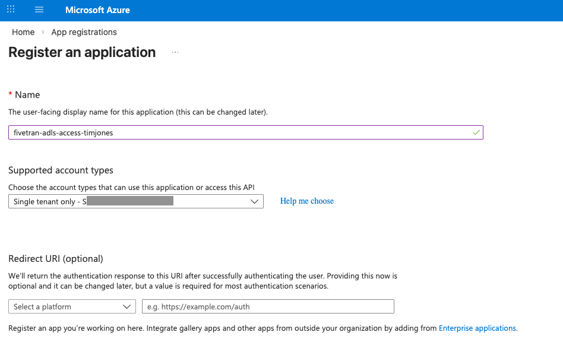
17. On the app overview page, copy the Application (client) ID and Directory (tenant) ID. Save these in a secure location — you will need them later.
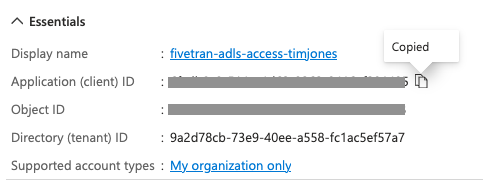
Create a Client Secret
18. In the left-hand pane under Manage, select Certificates & secrets.
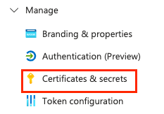
19. Click + New client secret.
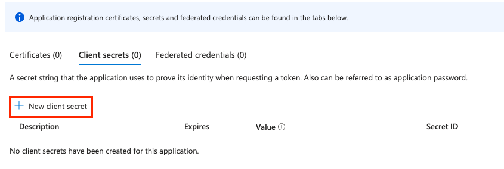
20. Give the secret a description and set the expiration according to your organization's requirements.
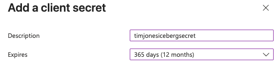
21. Copy the Value and store it in a secure location. This is your client secret — it will not be shown again.
Important
The client secret value is only displayed once. If you lose it, you will need to create a new secret.
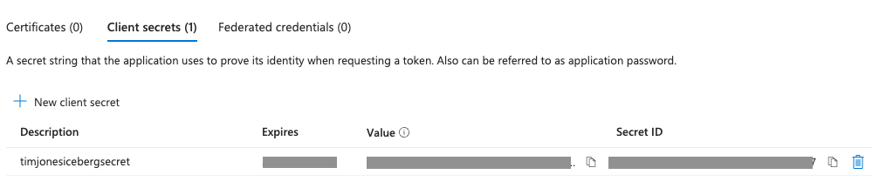
Assign Storage Permissions
Now we allow this service principal to access your ADLS storage account.
22. Navigate back to the storage account created in Section 1 by searching for its name in the Azure Portal search bar. In the left-hand pane, click Access Control (IAM).
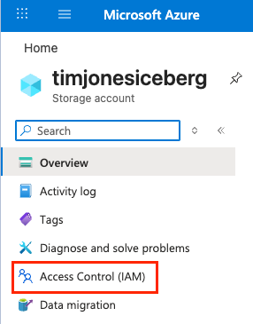
23. Click Add role assignment.
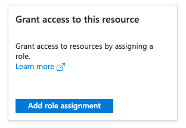
24. Search for Storage Blob Data Contributor, select the role, and click Next.
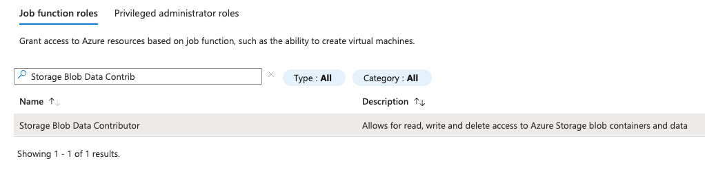
25. Click + Select members.
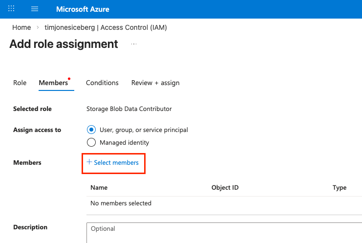
26. In the Select members pane on the right, search for the name you used when registering the application. Select it, then click Select at the bottom.
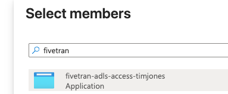
27. Add any Conditions if applicable to your organization. No conditions were added in this demo. Then click Review + assign.
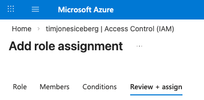
Fivetran Access Setup Complete
You will see a notification confirming the role assignment was successful. Your service principal now has read/write access to the ADLS storage account and is ready for Fivetran to use.
3. Configure Fivetran Data Pipeline
Set up a Fivetran destination to write Iceberg tables to your ADLS container.
Create an ADLS Destination
28. Log in to Fivetran and navigate to the Destinations tab in the left-hand sidebar.
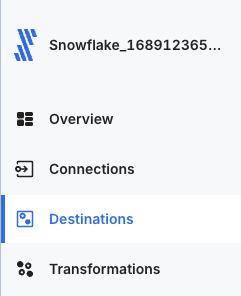
29. Click + Add destination in the top right-hand corner.
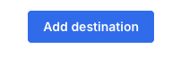
30. Search for Azure Data Lake Storage and click Set up.
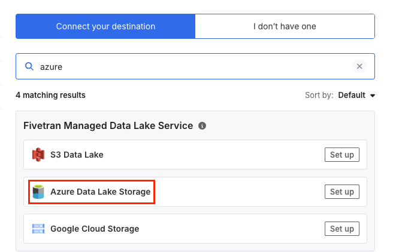
31. Give the new destination a descriptive name.
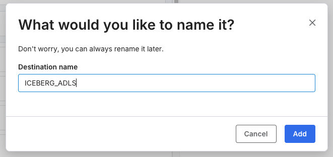
32. Fill in the destination details using the Azure configurations from Section 2:
| Fivetran Field | Azure Value |
|---|---|
| Client Id | Application (client) ID from the app registration |
| Tenant Id | Directory (tenant) ID from the app registration |
| Client Secret | The client secret value you saved |
Tip
The Application (client) ID maps to Fivetran's Client Id field, and the Directory (tenant) ID maps to the Tenant Id field.
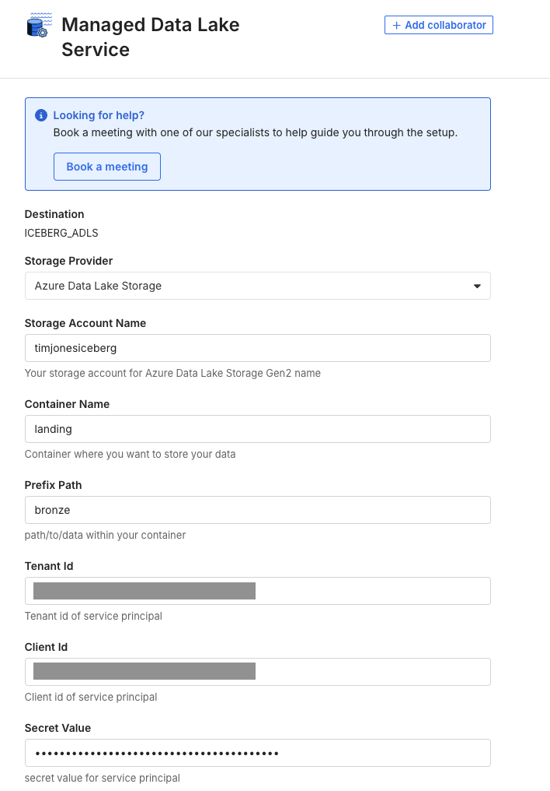
33. Do not select the OneLake or Unity options — we will use the default Fivetran REST Catalog, which uses the Polaris catalog. Configure the remaining options as required by your organization.
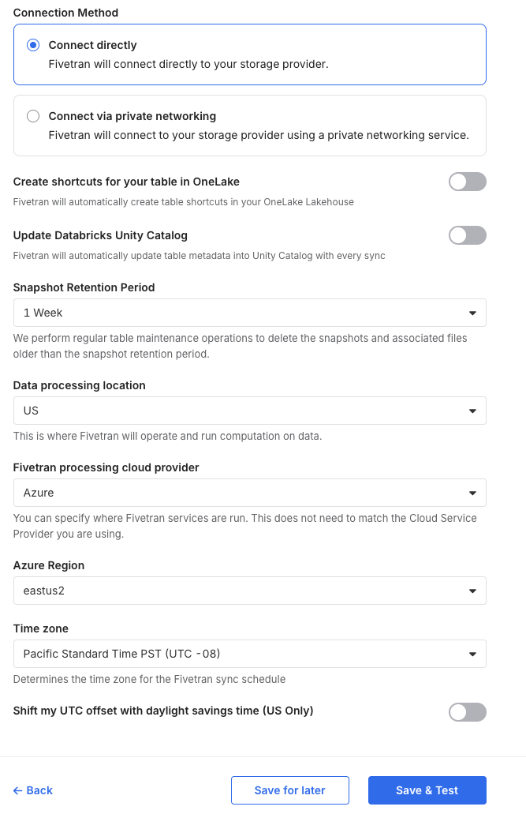
34. Click Save & Test and ensure all connection tests pass. Once successful, click View Destination at the bottom to see the destination details.
Destination Configured
Your Fivetran ADLS destination is now configured and ready to receive data as Iceberg tables.
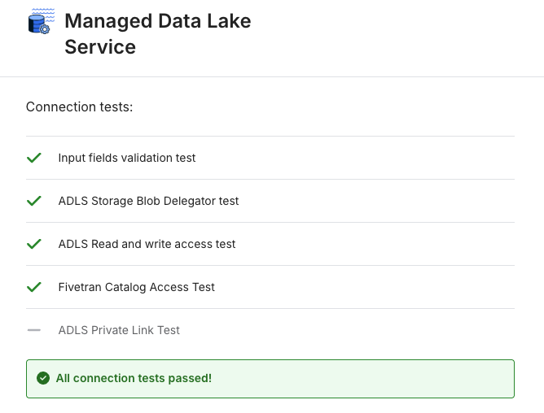
Create a Source Connection
35. Navigate to the Connections tab in the left-hand sidebar.
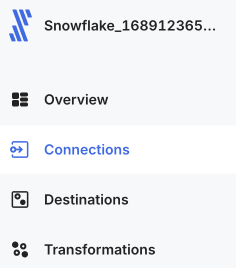
36. You will see a connection for Fivetran Platform with your ADLS destination. This is normal — the Fivetran Platform Connector is a specialized, free connector that exports your Fivetran audit logs, usage metrics, and account metadata (like connector status and sync history) into a schema in your destination. It provides visibility into data lineage, monitoring of connector performance, and control over operational costs.
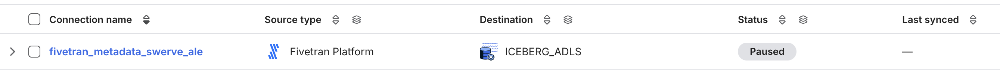
37. Click + Add connection in the top right-hand corner.
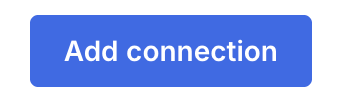
38. Search for your source connector. In this tutorial, we are using Azure SQL Database. Click Set up for your connector.
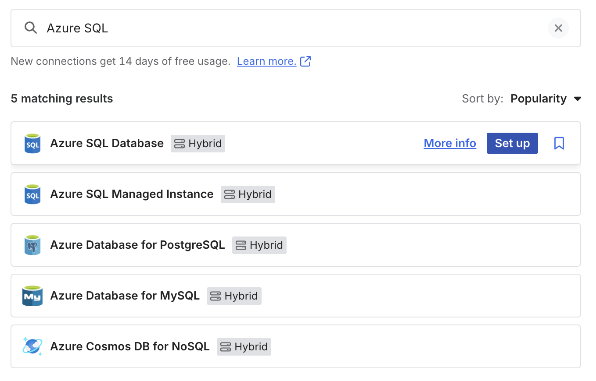
39. Select the ADLS destination you just set up.
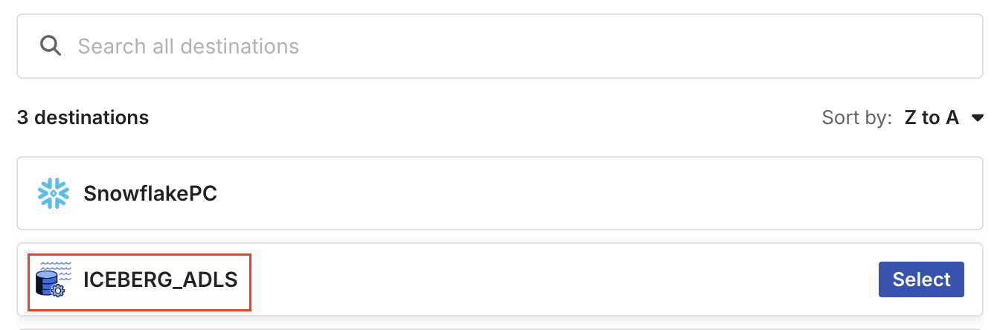
40. Configure the connection details for your source. For Authentication Method, select the option required by your organization's requirements.
Source-Specific
The configuration fields will vary depending on the source connector you selected. Refer to the Fivetran documentation for your specific source.
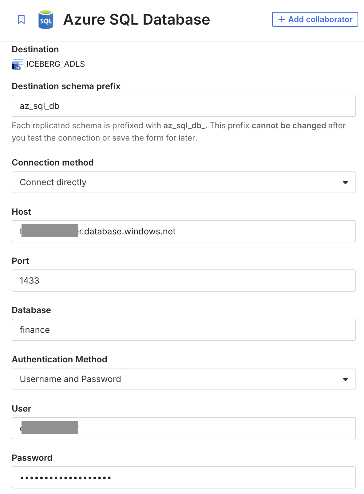
41. Copy the Fivetran IPs listed and whitelist them in your source's firewall so that Fivetran can access it. Once whitelisted, click Save & Test.
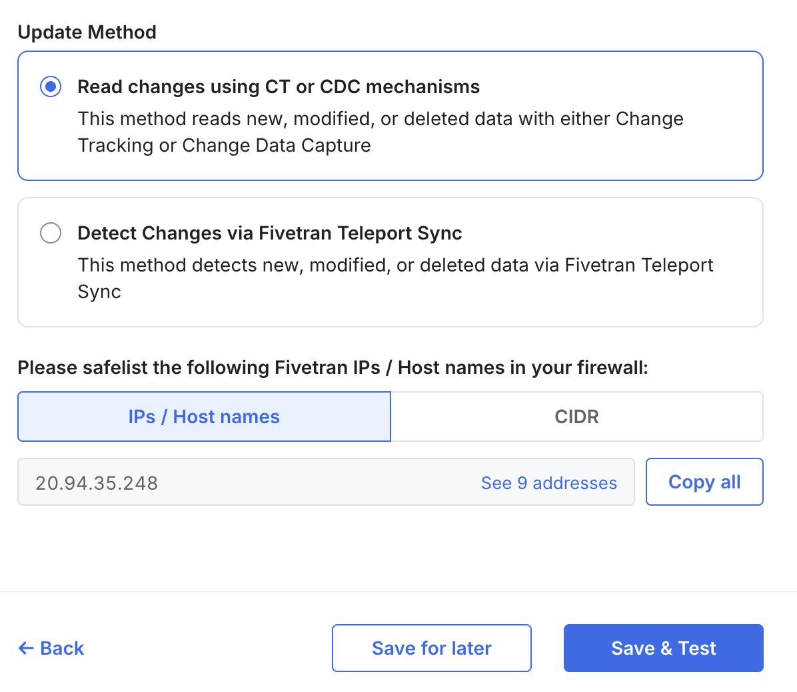
42. After whitelisting the Fivetran IPs on your firewall, test the connection and ensure all connection tests pass. Click Continue.
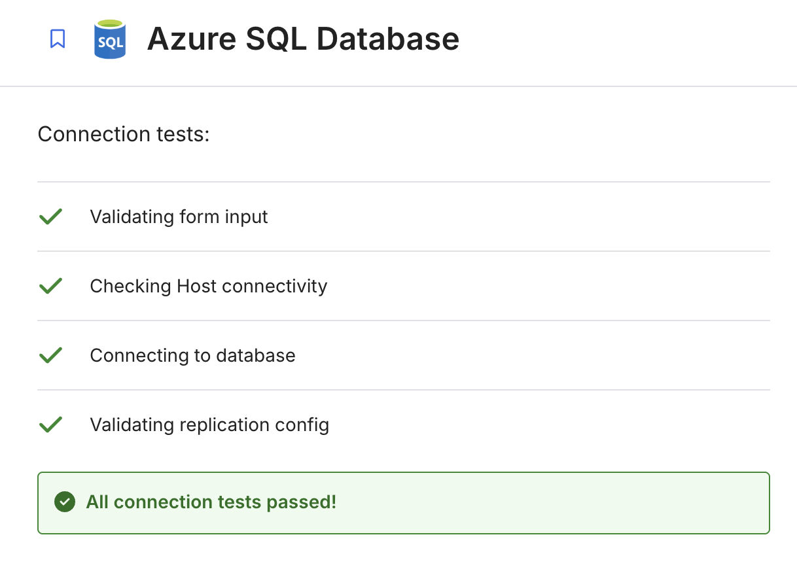
43. Select the data you want to sync, then click Save & Continue.
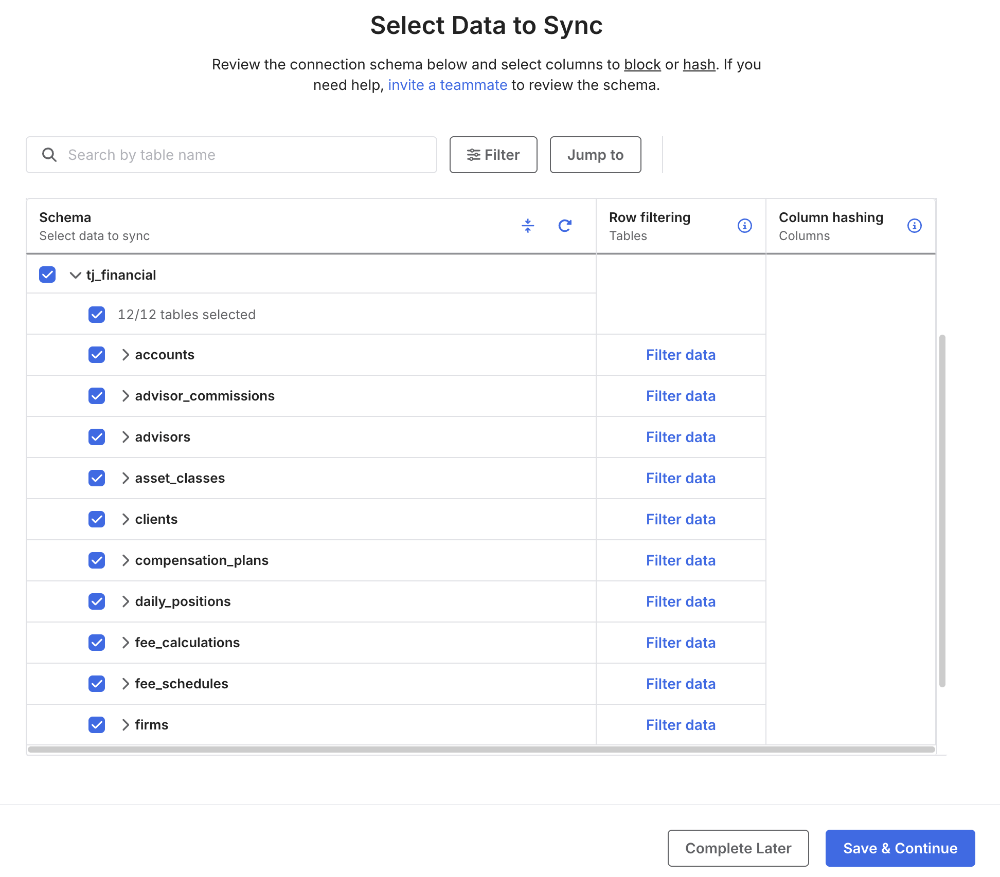
44. Determine how you want Fivetran to detect changes in your source data.
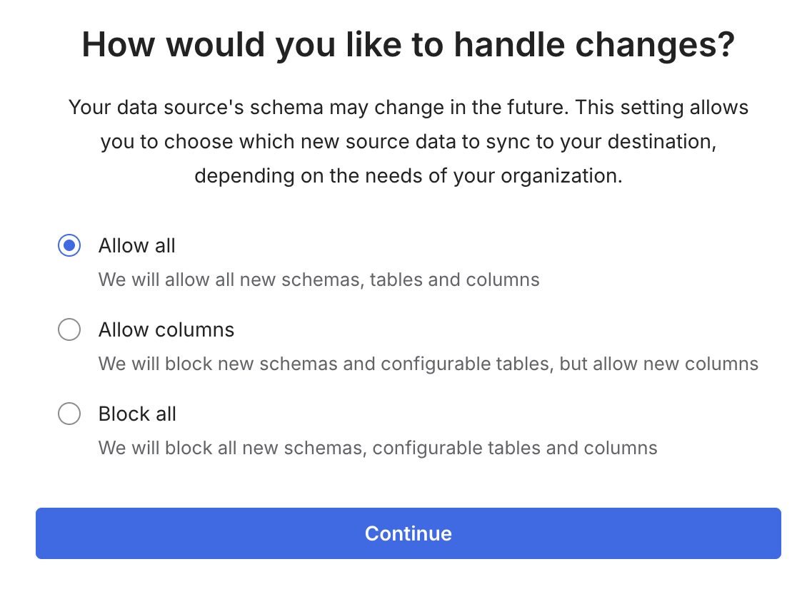
45. Click Start Initial Sync to begin syncing data from your source to ADLS as Iceberg tables.
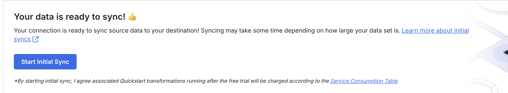
46. You will see a message confirming the historical sync was successful.
Fivetran Pipeline Complete
Your data is now syncing from your source into ADLS as Iceberg tables. Fivetran will continue to sync changes on the schedule you configured.
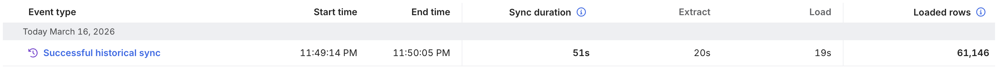
4. Connect Snowflake to ADLS Iceberg Data
Create a Snowflake external volume and catalog integration so Snowflake can access the Iceberg tables in your ADLS container.
47. In Fivetran, navigate to Destinations, select your ADLS destination, and go to the Catalog Integration tab. Select Snowflake and copy the generated code.
Info
This code will create two Snowflake objects:
- An External Volume — tells Snowflake where your Iceberg data lives in ADLS. Learn more.
- A Catalog Integration — connects Snowflake to the Fivetran REST Catalog so it can discover and read your Iceberg tables. Learn more.
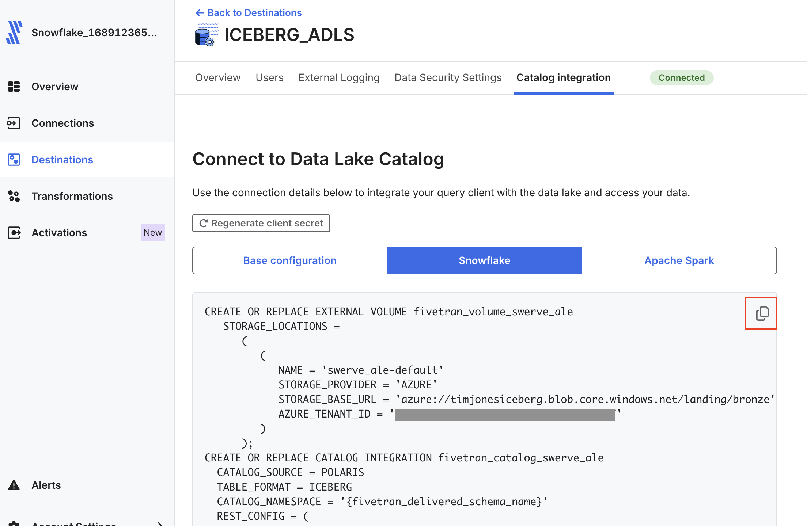
48. Run the external volume statement in Snowflake. It should execute successfully.
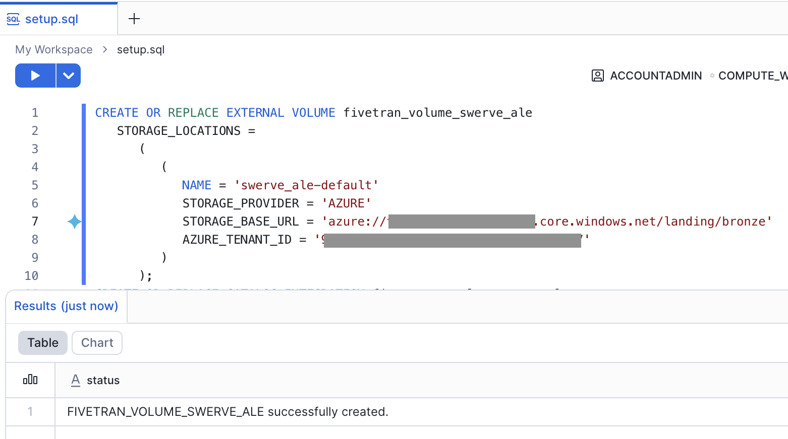
49. Run the catalog integration statement in Snowflake. It should also execute successfully.
Snowflake Integration Complete
Your external volume and catalog integration are now configured. Snowflake can access your ADLS Iceberg data through the Fivetran REST Catalog.
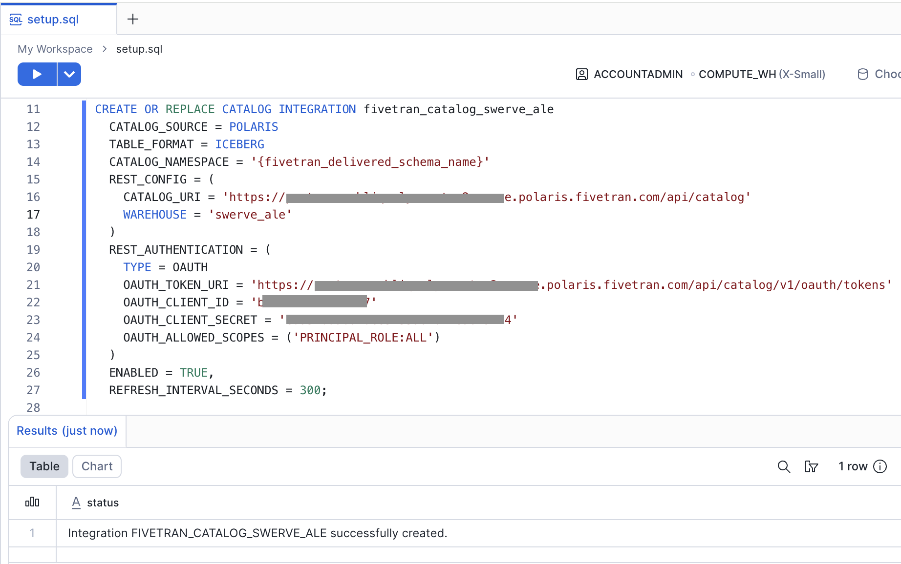
50. Run the following command to describe the external volume and retrieve its properties:
Warning
Run the following query immediately after the DESC EXTERNAL VOLUME command — it uses LAST_QUERY_ID() to parse the results.
SELECT
PARSE_JSON("property_value"):AZURE_MULTI_TENANT_APP_NAME AZURE_MULTI_TENANT_APP_NAME,
PARSE_JSON("property_value"):AZURE_CONSENT_URL AZURE_CONSENT_URL,
PARSE_JSON("property_value"):NAME AS NAME ,
PARSE_JSON("property_value"):STORAGE_REGION STORAGE_REGION,
PARSE_JSON("property_value"):AZURE_TENANT_ID AZURE_TENANT_ID
FROM TABLE(RESULT_SCAN(LAST_QUERY_ID()))
WHERE "property" = 'STORAGE_LOCATION_1';
Grant Snowflake Access to ADLS
51. Navigate back to your storage account in the Azure Portal. Go to Access Control (IAM) and click Add role assignment.
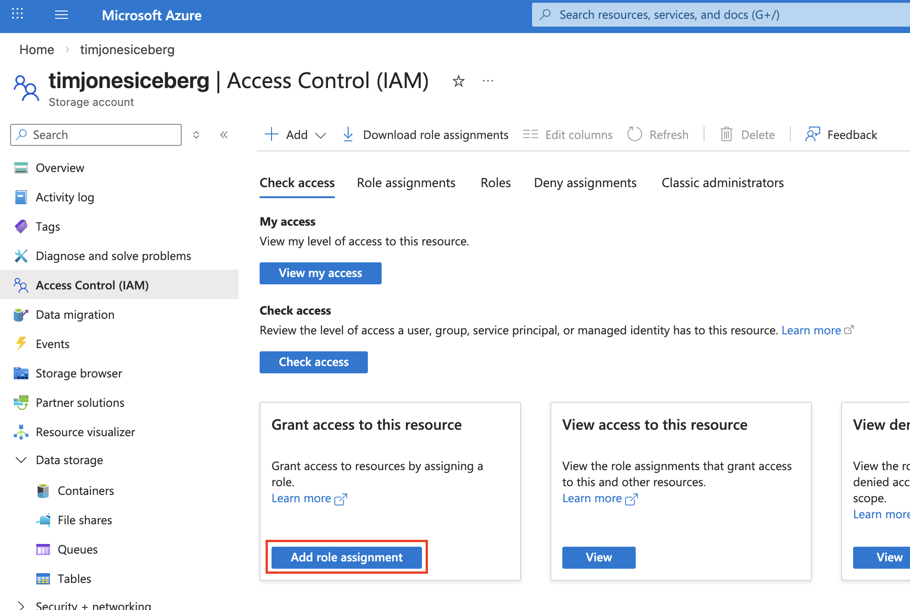
52. Search for Storage Blob Data Contributor, select the role, and click Next.
53. Under Members, click + Select members. Search for the Snowflake-generated service principal using the value from AZURE_MULTI_TENANT_APP_NAME (name will vary).
Tip
Remove everything after the underscore in the AZURE_MULTI_TENANT_APP_NAME value — that portion is a timestamp. Only search for the text before the underscore.
Select the application, then click Select at the bottom. Leave Conditions as-is and click Review + assign.
54. Copy the AZURE_CONSENT_URL from the query results and paste it into your browser. Sign in as an Azure Admin and approve the application. This allows Snowflake's service principal to access your tenant.
Wait 1–2 minutes for Azure RBAC propagation, then run the following in Snowflake to verify the external volume is working:
Ensure the output begins with "success":true.
External Volume Verified
Snowflake can now read and write to your ADLS storage account.
5. Create a Catalog-Linked Database
Create a catalog-linked database in Snowflake that auto-discovers schemas and tables from the Fivetran catalog.
55. Run the following command to create a catalog-linked database. Name the database based on what makes the most sense for your data source.
CREATE OR REPLACE DATABASE iceberg_fivetran_adls
LINKED_CATALOG = (
CATALOG = 'catalog_integration_name_here'
)
EXTERNAL_VOLUME = 'external_volume_name_here';
Catalog-Linked Database Created
Your catalog-linked database is now created. Snowflake will auto-discover schemas and tables from the Fivetran Iceberg catalog.
56. Describe the database to see the schemas and tables that were auto-discovered:
57. Navigate to the Database Explorer in Snowflake to see the new catalog-linked database, its schemas, and tables. As new data arrives through the linked catalog, it will automatically be queryable and discoverable here — no manual table creation required.
6. Query Iceberg Tables from Snowflake
Use standard SQL to query Iceberg tables stored in ADLS — no data copying required.
58. All your data is now available to query directly in Snowflake. These are Apache Iceberg tables — an open table format — meaning they are also available for other compute engines (e.g., Spark, Trino, Flink) to query in their respective environments.
59. Query the data using standard SQL — it is fully queryable just like any other Snowflake table.
Setup Complete
You have successfully configured an end-to-end pipeline: Fivetran syncs data from your source into ADLS as Iceberg tables, and Snowflake queries them directly through a catalog-linked database.